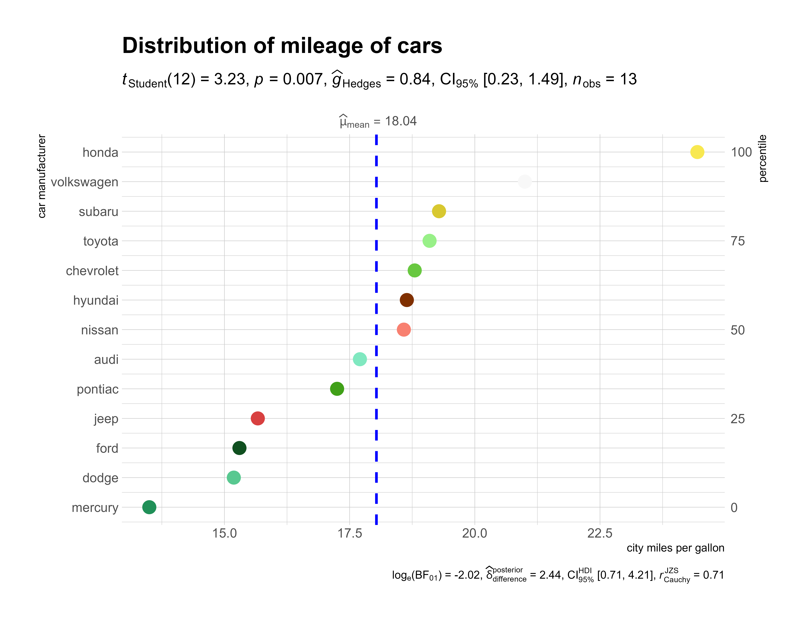
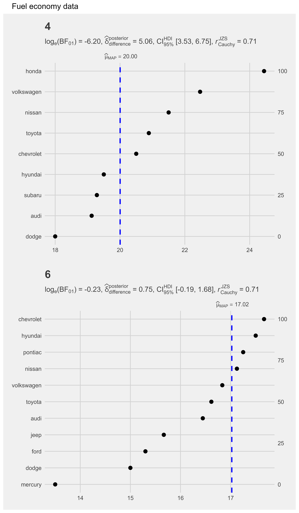

vignettes/web_only/ggdotplotstats.Rmd
ggdotplotstats.RmdThe function ggstatsplot::ggdotplotstats can be used for data exploration and to provide an easy way to make publication-ready dot plots/charts with appropriate and selected statistical details embedded in the plot itself. In this vignette we will explore several examples of how to use it.
This function is a sister function of gghistostats with the difference being it expects a labeled numeric variable.
ggdotplotstats
Let’s begin with a very simple example from the ggplot2 package (ggplot2::mpg), a subset of the fuel economy data that the EPA makes available on http://fueleconomy.gov.
# looking at the structure of the data using glimpse dplyr::glimpse(x = ggplot2::mpg) #> Rows: 234 #> Columns: 11 #> $ manufacturer"audi", "audi", "audi", "audi", "audi", "audi", "audi"... #> $ model "a4", "a4", "a4", "a4", "a4", "a4", "a4", "a4 quattro"... #> $ displ 1.8, 1.8, 2.0, 2.0, 2.8, 2.8, 3.1, 1.8, 1.8, 2.0, 2.0,... #> $ year 1999, 1999, 2008, 2008, 1999, 1999, 2008, 1999, 1999, ... #> $ cyl 4, 4, 4, 4, 6, 6, 6, 4, 4, 4, 4, 6, 6, 6, 6, 6, 6, 8, ... #> $ trans "auto(l5)", "manual(m5)", "manual(m6)", "auto(av)", "a... #> $ drv "f", "f", "f", "f", "f", "f", "f", "4", "4", "4", "4",... #> $ cty 18, 21, 20, 21, 16, 18, 18, 18, 16, 20, 19, 15, 17, 17... #> $ hwy 29, 29, 31, 30, 26, 26, 27, 26, 25, 28, 27, 25, 25, 25... #> $ fl "p", "p", "p", "p", "p", "p", "p", "p", "p", "p", "p",... #> $ class "compact", "compact", "compact", "compact", "compact",...
Let’s say we want to visualize the distribution of mileage by car manufacturer.
# for reproducibility set.seed(123) # removing factor level with very few no. of observations df

grouped_ggdotplotstats
What if we want to do the same analysis separately for different engines with different numbers of cylinders?
ggstatsplot provides a special helper function for such instances: grouped_ggdotplotstats. This is merely a wrapper function around ggstatsplot::combine_plots. It applies ggdotplotstats across all levels of a specified grouping variable and then combines the individual plots into a single plot.
Let’s see how we can use this function to apply ggdotplotstats to accomplish our task.
# for reproducibility set.seed(123) # removing factor level with very few no. of observations df

purrr
Although this is a quick and dirty way to explore a large amount of data with minimal effort, it does come with an important limitation: reduced flexibility. For example, if we wanted to add, let’s say, a separate test.value argument for each gender, this is not possible with grouped_ggdotplotstats. For cases like these, or to run separate kinds of tests (robust for some, parametric for other, while Bayesian for some other levels of the group) it would be better to use purrr.
See the associated vignette here: https://indrajeetpatil.github.io/ggstatsplot/articles/web_only/purrr_examples.html
Following tests are carried out for each type of analyses-
| Type | Test |
|---|---|
| Parametric | One-sample Student’s t-test |
| Non-parametric | One-sample Wilcoxon test |
| Robust | One-sample percentile bootstrap |
| Bayes Factor | One-sample Student’s t-test |
Following effect sizes (and confidence intervals/CI) are available for each type of test-
| Type | Effect size | CI? |
|---|---|---|
| Parametric | Cohen’s d, Hedge’s g (central-and noncentral-t distribution based) | Yes |
| Non-parametric | r (computed as \(Z/\sqrt{N_{obs}}\)) | Yes |
| Robust | \(M_{robust}\) (Robust location measure) | Yes |
| Bayes Factor | No | No |
To see how the effect sizes displayed in these tests can be interpreted, see: https://indrajeetpatil.github.io/ggstatsplot/articles/web_only/effsize_interpretation.html
If you find any bugs or have any suggestions/remarks, please file an issue on GitHub: https://github.com/IndrajeetPatil/ggstatsplot/issues
For details, see- https://indrajeetpatil.github.io/ggstatsplot/articles/web_only/session_info.html